CONTENT KIT
Everything you need to make content about Amplemarket that counts.
For partners accepted into the November Content SPIFF. Start with the one-page rules, grab your SPIFF link, then pick a product and an angle. Posts published November 1-30, 2026.
The rules on one page
A post counts only if it follows all of these. The full terms have the detail.
Publish November 1-30
From the accounts you applied with. Posts must be public, not limited to connections or friends. A subscriber-only newsletter counts if you subscribe partners@amplemarket.com to it or forward us the sent edition.
Amplemarket is the main subject
With substance: a workflow, a result, a how-to, a demo, or an opinion with reasons.
Minimum format
Written posts 50+ words, video 30+ seconds, carousel 5+ slides, blog or newsletter 400+ words.
Your SPIFF link
In the post, the video description or the first comment (TikTok: in your bio).
Tag us
On X, tag the Amplemarket account. On LinkedIn, write "Amplemarket" or "Amplemarket.com".
Up to 5 posts, 5 days apart
The same content on several channels counts once.
Live for 60 days
Keep it up for 60 days after publishing.
Submit within 7 days
Through the submission form, one submission per post.
Red lines
Any of these and the post doesn't count, and we ask you to take it down. Repeated or deliberate breaches end your participation.
Invented results or guarantees
Only real numbers: your own, with context, or ours from Approved numbers.
Personal data on screen
Blur names, emails and phone numbers. Company names can stay.
Attacks on competitors
Factual, first-hand comparisons are fine. Attacks aren't.
Pricing, discount or roadmap claims
Leave prices, deals and what's coming next to us.
Doesn't count
These don't break a rule, but they don't earn a payout either.
We review every Friday. Each post counts or doesn't, and we tell you why. Post early: the last week of November is US Thanksgiving week and reach drops.
Standard or Featured
| Standard: $75 | Featured: $200 | |
|---|---|---|
| What it is | Meets every rule | Meets every rule and shows more |
| Looks like | A written post with a real workflow or a reasoned opinion | A demo or screen recording, a 5+ slide walkthrough, your own measurable result, or a full blog post or newsletter edition |
When you submit, request the tier you think your post meets, Standard or Featured. We confirm the final tier in the Friday review.
The easiest route to Featured: record your screen while you use the product (or talk over our demo clips) and blur any personal data.
Your link, tags and other links
Your SPIFF link is in your acceptance email and in your PartnerStack account. It's unique to you and carries your own tracking code, which is how we credit your posts, sign-ups and opportunities.
| Channel | Where the SPIFF link goes | Tag | Watch out |
|---|---|---|---|
| In the post or the first comment | Write "Amplemarket" or "Amplemarket.com" (our company page can't be tagged right now) | The first comment, not a later reply | |
| X | In the post or the first reply | Tag @amplemarket | A thread counts as one post |
| YouTube | In the description | Not needed | The whole video is about Amplemarket, not one segment of a roundup |
| TikTok | In your bio while the post is up | Not needed | Pick "TikTok bio" in the form |
| Blog, article, newsletter | In the body | Not needed | Newsletter with no public web version: subscribe partners@amplemarket.com or forward us the sent edition |
Copy your link exactly as we sent it. Don't shorten it, re-shorten it or edit it: that strips your tracking code and the post can't be credited.
Linking to Amplemarket pages
Inside your content you can also link to Amplemarket product pages and blog posts (the Products section lists them), for example "how the Parallel Dialer works". It helps readers and helps AI assistants connect your content to the product. Your SPIFF link stays the call to action: it's the only link that credits you.
How to talk about Amplemarket
In one line: Amplemarket is an all-in-one sales platform with AI agents built in. Agents build your pipeline; your team closes it.
What's in the platform
- Duo Intelligence: the intelligence layer behind Amplemarket's advanced features, powering every step from research to reply.
- Data: find the right buyers and know when to reach them. Verified contacts and company data are refreshed every week, and buying signals show who's ready to talk. Missing fields get filled and outdated records refreshed, so your CRM stays fresh, and your reps and agents work from the same accurate view.
- Execution: reach buyers on the channel they prefer without juggling tools. Email, calls and social outreach run in one connected sequence, and follow-ups happen on their own. Every conversation lands in one inbox, and the Parallel Dialer cuts dialing time so reps spend their day talking, not waiting. Clear reporting shows what's working across your outbound.
- Optimization: keep your emails landing in the inbox as you scale. Each message goes out from the right mailbox, and delivery problems are flagged before they hurt your sender reputation, so more outreach doesn't mean more bounces or spam.
- Everywhere: sell from the tools your team already uses. Amplemarket connects to your CRM, email, dialer and AI assistants through the Amplemarket MCP and integrations, so setup stays light and the work flows where your team already is.
How "Duo" works now
- Duo Intelligence is the intelligence layer behind Amplemarket's advanced features, powering every step from research to reply.
- The products built on it are Duo Copilot, Duo Accounts, Duo Copywriter, Duo Inbox and Duo Voice. Always use the full name.
- Never write "Duo" on its own to mean a feature. "Duo found me five leads" is wrong; "Duo Copilot found me five leads" is right.
- Duo Intelligence is built in but not required: Searcher, for example, works with or without AI.
Words to use, and to avoid
| Say | Don't say |
|---|---|
| "Create an agent" (in Duo Copilot); "the agent tracks a signal" | "Set up a signal" (you set up an agent, which tracks the signal) |
| "Runs on autopilot or waits for your review"; "reps stay in control" | "Autonomous", "replaces reps", "fully automated sales" |
| "Multichannel: email, phone and LinkedIn"; "social outreach" | "LinkedIn automation", "automated LinkedIn steps" or anything similar; don't mention a LinkedIn extension |
| "Amplemarket", one word, capital A | AmpleMarket, Ample Market, AM, "the Amplemarket app" |
| Product names exactly as on amplemarket.com | Shortened or lowercase names ("the dialer", "copilot", "MCP" on its own) |
Products: what they are and what to lead with
Use these to get the facts right, then say it your way. "Lead with" is the story we want told; "Numbers" are the only figures you can quote (see Approved numbers).
Duo Copilot
Always-on AI agents that track the buying signals you care about, find the right people and prepare personalized multichannel outreach for them.
How it works: you create an agent in four steps- Signal: what the agent tracks. There's a library of agents: job changes, closed-lost reactivation, competitor G2 reviews, engagement with competitors' or thought leaders' posts, funding, hiring, news, Slack communities, custom CRM signals and more.
- Filters: who counts, using your ICP, personas and exclusion lists.
- Distribution: which rep gets the leads.
- Output: how the agent writes to the people it finds, and whether it runs on autopilot or waits for a rep to review.
- The right person, with a reason to reach out now: it works at the person level, not just the account.
- Full context before outreach: who they are, the account, and the signal details.
- Outreach ready to go: a multichannel sequence written for that person and that signal.
- Control: each agent runs on autopilot or waits for review, and it learns from what reps dismiss and edit.
100+ buying signals tracked per rep every week · 66%+ average open rate on Duo Copilot leads · 3.2x more replies from Duo Copilot leads · 10h+ saved per rep each week
Duo Accounts
An account research agent. Track your target accounts and it tells you which to work first, who to engage and why now, with the evidence behind every reason.
How it works- It researches each tracked account from your CRM (activity and notes), Duo signals, Amplemarket company data and public sources: news, job openings, social activity, G2 reviews, Slack communities and company blogs. A first run takes 2-3 minutes. It lives in the account's research view in Amplemarket.
- Each account gets a relevancy level (high, medium, low or none), the reasons to engage, the signals behind them and the source of each.
- "Plan outreach" sends the research to your AI assistant through Amplemarket MCP, to recommend stakeholders and an angle for each role, then turn the plan into a sequence.
- A daily email and Slack digest covers up to five tracked accounts.
- Know which accounts deserve your time today, and why.
- Evidence you can check: every reason shows its source.
- Honest when there's nothing: an account with no reason to engage shows "none" instead of padded reasons. That doesn't mean the account isn't a good fit, just that there's nothing worth acting on today, so your team can focus where the timing is right and come back when a new signal shows up.
- Multithreading: one piece of research supports different conversations with each person in the buying group.
Duo Copywriter
Writes personalized first-touch emails and social messages from prospect activity, company context and signals, in your team's tone, value props and persona messaging. Add it as a stage in any sequence.
Lead withHooks that go beyond the job title; it sounds like your team, not a template; reps review before sending.
Duo Inbox
Drafts replies to prospect questions and objections across email and social, from your approved value props, battlecards and reply scenarios.
Lead withReply faster without losing quality; every draft shows its sources; nothing is sent without review.
Duo Voice
Personalized AI voice messages in the rep's own voice, in several languages.
Lead withStand out in busy inboxes; personal at scale. Describe it as voice messages for social outreach, not as automated LinkedIn voice notes.
Parallel Dialer
It calls up to 5 people at once from your call tasks and connects you to the first one who picks up. The other calls stop, and that contact's page opens so you have context the moment they answer. Amplemarket handles voicemails and no-answers.
Lead with- More conversations, less time listening to ringing.
- Context the second someone answers.
- One workflow before, during and after the call: verified phone numbers, call outcomes, follow-up and CRM activity in the same place, with no list exports.
- Call intelligence: transcripts, summaries, insights and coaching.
- Better reach: verified phone data, Smart Rotation and Local Presence.
~5x more calls · ~3x more meaningful conversations · ~75% less time dialing · ~3x higher meeting rate as a multichannel step · 96.5% phone number accuracy
Don't sayThat it's an agent or part of Duo Intelligence. No contact data in screenshots.
Amplemarket MCP
Run outbound from the AI tools you already use (Claude, ChatGPT, Cursor, Grok, Perplexity and other MCP clients): find, research, enrich and analyze leads, and add them to sequences, just by asking.
Lead with- Work where you already work: no tab-switching, no exports.
- Every action runs under the rep's own login, so the assistant can only do what that person can. No shared keys.
- Live Amplemarket data behind every answer.
- One process for the whole team: approved personas, saved searches, lists and messaging settings, whoever is prompting.
- No lock-in to one AI vendor, and connected in under a minute. There's also a public library of ready-made skills.
Usage numbers, or that it acts without a person asking. Blur names in screenshots.
CRM Enrichment
It keeps the contact and company data in your CRM complete and current, on a schedule you set, from the same Amplemarket data your reps and agents use.
Lead with- No more manual updates: pick a schedule once and records stay current.
- Full control: choose the records (by region, industry or segment) and the fields, see the estimated credits before launch and set a limit per run.
- Efficient: company data is enriched without credits; credits are only used when new contact details are found.
- No guesswork: every run shows what changed, what was missed and what was skipped, and a run can be reverted.
- Inbound leads can be enriched as soon as they're created.
- One data source for prospecting and the CRM, so no second data vendor.
200M+ verified contacts · 70M+ data updates a week · under 3% bounce
Don't sayThat it's AI, an agent or part of Duo Intelligence. Don't compare its data with named competitors.
Angles that work
Ideas to get you started, not a list you have to pick from. Any angle works as long as your post follows the rules. Pick one idea per post: specifics beat adjectives every time.
| Product | Angle 1 | Angle 2 | Angle 3 |
|---|---|---|---|
| Duo Copilot | The agent you'd build first, and why: the signal, the filters, who gets the leads | One person your agent surfaced that you'd never have caught by hand (data blurred) | Autopilot or review: which agents you'd trust to run on their own, and which you keep an eye on |
| Duo Accounts | Why picking the right account is the real bottleneck | Reading one account's research: the reasons, the sources, what you'd do next (data blurred) | From research to a multithreaded plan with "Plan outreach" and your AI assistant |
| Parallel Dialer | A calling block before and after, with your own numbers | Having the contact's page open the second someone picks up | When you'd run 1 line versus several |
| Amplemarket MCP | A list or report you built just by asking your AI assistant | A workflow that chains your assistant, Amplemarket and another tool | Is it safe to connect an AI assistant to your sales data? How Amplemarket MCP works only under your own login and permissions |
| CRM Enrichment | A bounce or a bad call caused by a stale CRM record | How you'd set it up: records, fields, credit limit, schedule | One data source for prospecting and the CRM |
| The platform | Consolidating the outbound stack: what you'd cut and why | Where agents help and where humans still make the call | Setting up Amplemarket for a client: what you do on day one |
Content tips from our Marketing team
We asked our Marketing team what makes content about Amplemarket work, on every channel. Here's what they shared. Take what helps: none of it is required, and you don't have to follow any of these structures as long as your post follows the rules.
Structures that work
Fill them with your own experience, your clients' problems and your results.
| Format | Structure |
|---|---|
| LinkedIn or X post (50+ words) | 1. Hook: a moment, a number or an opinion, not the product name. 2. Context: the problem, in your or your client's words. 3. What you did in Amplemarket: one workflow, specific. 4. The result or the lesson: yours, with context. 5. Your take: who it's for, and when it isn't. 6. SPIFF link (or "link in the first comment") and your disclosure line. |
| X thread | 1. Tweet 1: the hook and the promise. 2. One step per tweet. 3. Last tweet: your take, the SPIFF link and @amplemarket. |
| Carousel (5+ slides) | 1. Cover: the outcome in one line. 2. The problem. 3-5. The steps, one screenshot each (data blurred). 6. The result or the lesson. 7. Who should try it, with the SPIFF link in the post copy. |
| Short video (TikTok, Shorts, Reels; 30-60 s, vertical) | 0-3 s: the hook. By 10 s: the screen. Then: one before-and-after moment. Close: your take. Link in the bio (TikTok) or the description. |
| YouTube or long video | 1. The outcome they'll get. 2. Your context. 3. The walkthrough on screen. 4. What you'd change or watch out for. 5. Who it's for. 6. SPIFF link in the description. |
| Blog post or article (400+ words) | 1. Title phrased as the question your reader asks. 2. TL;DR in 2-3 lines. 3. The problem. 4. Step-by-step workflow with screenshots (data blurred). 5. Results or lessons. 6. Where it fits and where it doesn't. 7. FAQ with 3-5 questions. 8. SPIFF link as the call to action, with Amplemarket product pages linked in the body. |
| Newsletter (400+ words) | 1. Open with your insight. 2. The feature: the workflow, how you'd set it up and what changed. 3. One clear call to action with your SPIFF link. |
Write so AI assistants cite you
More people now ask AI assistants which tools to use. Content that answers a question clearly is what those assistants quote.
- Answer a real question in the title or first lines ("How do I…", "What's the best way to…").
- Be specific: name the product exactly, the workflow, the numbers and where they come from.
- Use structure assistants can read: short sections, lists, tables, a TL;DR and an FAQ in long-form pieces.
- Write from first-hand experience: what you did, what you saw, who it's for.
- Link to the relevant Amplemarket product page or blog post in the body.
- Use text, not only video: add a description, captions or a transcript to videos.
Drafting with an AI assistant
Fine, as long as the substance is yours. Generic AI text doesn't count. A starting prompt:
Help me write a [format] for [channel] about [product]. My audience is [who]. Here's what I actually did and saw: [your notes, client example, numbers]. Use only these facts and the product facts below; don't invent results. Keep it in my voice: [paste one of your recent posts]. Follow this structure: [structure from this kit]. Product facts: [paste the product's entry from this kit].
Example posts
These show the bar. They are not templates: copying or lightly editing one doesn't count. Placeholders in [brackets] are where your own specifics go.
I've stopped opening my sales tool to build lists. Last week I asked Claude for [the list you asked for], and it pulled it straight from my Amplemarket account, enriched and ready for a sequence. Same login, same permissions, no exports. The speed is nice. What actually changed is that I stay in one conversation: ask, check, adjust, done. If you already spend your day in an AI assistant, Amplemarket MCP is worth a look. Link in the first comment. (I'm an Amplemarket partner.)
0:00 · "This is what my calling block looks like now." Show the call task list. 0:10 · Set the Parallel Dialer to 3 lines and start. 0:25 · Someone picks up: the other calls stop and their contact page is already open. Talk through what you look at first. 0:50 · After the call: the transcript and summary. Say what you'd do with them. 1:10 · Your take: who this is for and when you'd use 1 line instead. Description: one line on what the video shows, your SPIFF link, "I'm an Amplemarket partner."
1/ The most expensive field in your CRM is the one nobody updated. [Your story: a bounce, a wrong title, a call to someone who left.] 2/ Amplemarket's CRM Enrichment fills those fields on a schedule you set. You pick the records, the fields and a credit limit. 3/ The part I'd look at first: every run shows what was enriched, missed or skipped, so you can check it. 4/ One data source for prospecting and the CRM. [Your SPIFF link]. I'm an Amplemarket partner.
Slide 1: "The Duo Copilot agent I'd set up first for [type of client]." Slide 2: The problem: [what reps were missing]. Slides 3-5: Signal, filters and distribution, one screenshot each (data blurred), with why you chose each. Slide 6: Autopilot or review, and why. Slide 7: What happened in the first week [your result]. Post copy: your take, SPIFF link in the first comment, "I'm an Amplemarket partner."
Real examples
Posts by partners and advisors, published before this SPIFF. They show the voice and substance we're after: first-hand, specific, one workflow at a time. Product names and rules have changed since, so follow this kit, not their wording.
* This post mentions an upcoming feature. Roadmap claims are a red line in this SPIFF, so leave them out of your posts.
Approved numbers
Lead with your own numbers wherever you can, stated as yours and with context. When a piece calls for more, such as a blog post, use the numbers below as written, with their source. Customer numbers belong to that customer: name the customer and link the story, and never present them as your own result or as a guarantee.
From amplemarket.com
| Topic | Number | Source |
|---|---|---|
| Data | 200M+ verified contacts · 70M+ data updates a week · under 3% bounce | CRM Enrichment page |
| Duo Copilot | 100+ buying signals tracked per rep every week · 66%+ average open rate · 20%+ of leads showing interest · 3.2x more replies · 10h+ saved per rep each week | Duo Copilot page |
| Parallel Dialer | ~5x more calls · ~3x more meaningful conversations · ~75% less time dialing · ~3x higher meeting rate as a multichannel step · 96.5% phone number accuracy | Parallel Dialer page |
From customer stories
Use these in blog posts and newsletters, where they work as social proof. On social posts, make your own experience the focus, not these numbers.
| Customer | Result | Story |
|---|---|---|
| Clara | 35% of closed-won deals sourced through Amplemarket; 2x monthly meetings | Read |
| O'Reilly | $21M pipeline in 90 days; replaced three sales tools | Read |
| DataStax | 150+ qualified enterprise opportunities and 16 deals won in under 8 months | Read |
| LILT | 56% lower tooling costs; 35% of qualified meetings sourced | Read |
| Thrive Learning (Duo Copilot) | 200% more opens and replies; 242% more interested responses; 2 hours saved per rep per day | Read |
| Centaur Labs | 6x replies; 72% lower bounce rate; 4.4x more interest | Read |
| Sendoso | 3.2x more replies; 78% open rate; under 3% bounce | Read |
| Ideals | 452 meetings booked; 53% open rate | Read |
| Vanta | 9x ROI | Read |
Approved customer quotes
Every quote below is published on amplemarket.com. You may use them word for word, or shortened, never reworded. Attribute them only to "an Amplemarket customer": no names, companies or titles.
Customer quotes work best in blog posts and newsletters. On social posts, make your own experience the focus.
Parallel Dialer
- "With Amplemarket's Parallel Dialer, I am spending less time dialing and reach far more people than I could with 1:1 calling."
- "The Parallel Dialer is the ideal addition to an already powerful and well-designed tool like Amplemarket. Having a unified platform consolidates all outreach workflows, saves valuable time and completely removes the friction from high-volume outreach."
- "We also moved the outreach and dialing directly into Amplemarket to save SDRs time, instead of having them call through HubSpot."
Amplemarket MCP
- "Now with Claude and the MCP, I create reports for leadership. I just ask Claude to generate it, and I send it through Slack. It saves a lot of time and makes my life very easy."
- "Amplemarket is one of (or the best) sales tools for the AI pilled AE/BDR in existence. I've never worked with such an AI-native sales tool. MCP is sick, and the Skills put it over the top."
Duo Accounts
- "This is exactly the tool I've been wanting. It's basically like an intent dashboard - I can see what's happening across my accounts, find the right people, and get them into a sequence without leaving the flow."
- "It's surfacing things that would've taken me a long time to find on my own - the kind of research you know you should do on every account and never actually have time for. Now it's just there, and it's a great way to holistically understand which accounts are best to chase."
Duo Copilot
- "Duo Copilot and its AI-generated sequences and emails make my work faster and help me find good leads with minimal effort."
Downloads
Everything here is cleared for SPIFF content, and so are the product walkthrough videos on amplemarket.com. You can crop images, cut clips and add your own captions or voiceover. Don't edit the product UI or the logo (see Brand guidelines). Talking over our videos in your own words is the quickest route to a Featured post.
Where each asset works best. On social posts, lead with your own experience and workflows, and use the product screens and videos to show them. Customer quote cards and customer numbers work best in blog posts and newsletters, where they read as social proof.
Duo Copilot
Real product screens with personal data blurred. Good for carousels and step-by-step posts.
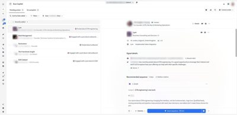

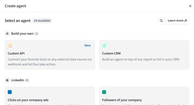

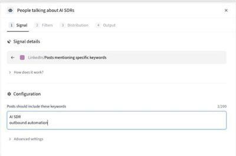

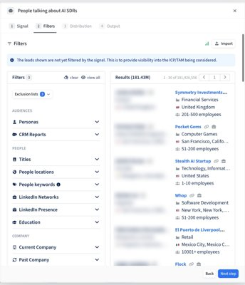

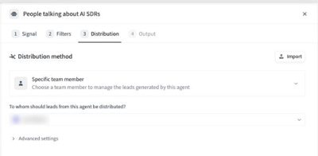

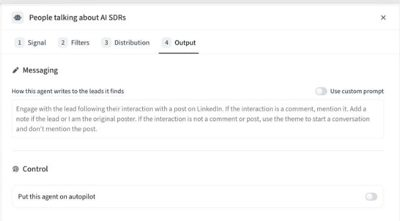

Duo Accounts
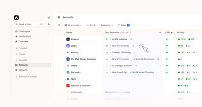

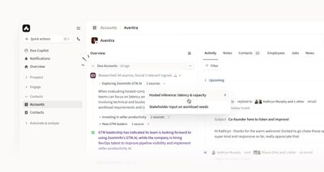

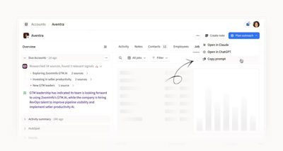

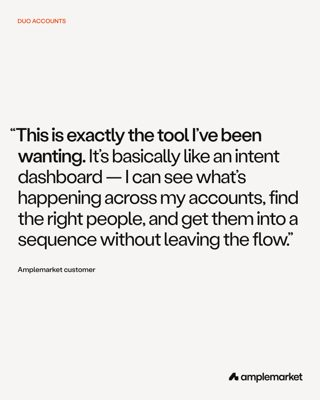

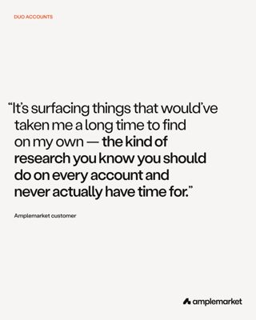

Parallel Dialer


Amplemarket MCP


CRM Enrichment
The product demo is the same one on the CRM Enrichment page. Talk over it in your own words for a Featured post.
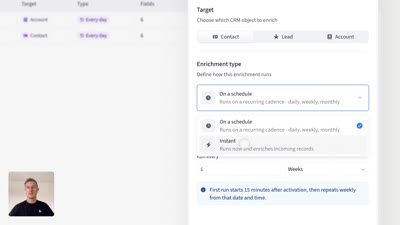
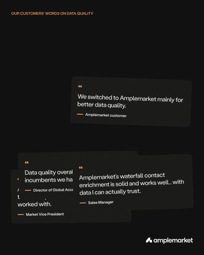
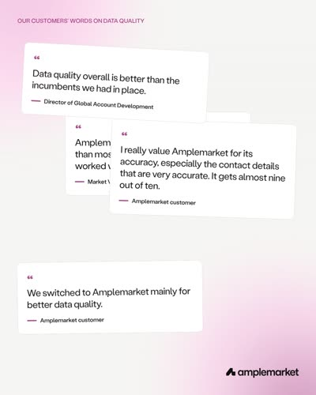
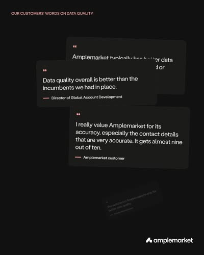
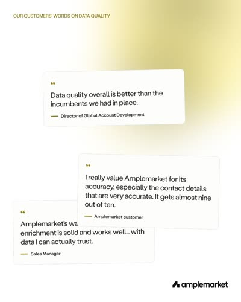
Hide data in screenshots and recordings
Two free Chrome extensions from our team keep personal data out of your screenshots and screen recordings. Use one of them every time you show Amplemarket on screen. The examples below use made-up data, not a real person or company.
Amplemarket Tools
Blurs emails and phone numbers on Amplemarket screens.
Names stay visible: blur them yourself.
Install from the Chrome Web StoreAmplemarket Demo Redactor
Replaces emails, phone numbers and deal amounts with placeholders. Company names stay visible.
Names stay visible: blur them yourself. To install, unzip the file, open chrome://extensions, switch on Developer mode and click "Load unpacked".
Download the zip (8 KB)Before you post, check what's still visible and blur anything the extension doesn't cover.
Amplemarket logos


All logo files in one zip: Download brand assets. Usage rules: amplemarket.com/brand.
More to watch, read and link to
| What | Where |
|---|---|
| Product demo video | Watch on amplemarket.com |
| Customer stories | amplemarket.com/customers |
| Duo Copilot case studies (PDF) | Thrive Learning · Centaur Labs · DataStax |
| October launch posts | Duo Accounts · Parallel Dialer · CRM Enrichment · Amplemarket MCP |
Brand guidelines
These come from the SPIFF terms and Amplemarket's public brand guidelines.
- Name: "Amplemarket", one word with a capital A, for both the company and the product. Not "the Amplemarket app".
- Product names: as they appear on amplemarket.com, capitalized, in full. Never "Duo" on its own.
- Logos: use the files in Downloads or on amplemarket.com/brand. Use the right version for the background (black or white), and the square or circle icon to fit the frame. Don't modify, recolor or stretch them.
- You can use the logo to show you're talking about Amplemarket, for example on a YouTube thumbnail or on a slide next to other tools you're comparing it with.
- Don't build a visual around it: no graphics where our logo is the main element, and nothing that looks like an Amplemarket ad or official branded content. Your content should look like yours, not ours. If you're not sure, skip it.
- Screenshots and videos: use real product screens, unedited, with personal data (names, emails, phone numbers) blurred. Company names can stay.
- Who you are: describe yourself as an Amplemarket partner, not as someone who works for or speaks for Amplemarket. Don't name pages, handles, accounts or domains after Amplemarket or its products, or present Amplemarket content as your own.
- Claims: no invented results, guarantees, pricing, discounts or roadmap. Numbers only from Approved numbers or your own, stated as yours.
- Competitors: factual, first-hand comparisons are fine; attacks aren't.
- LinkedIn wording: say "multichannel: email, phone and LinkedIn". Never "LinkedIn automation", "automated LinkedIn steps" or anything similar, and don't mention a LinkedIn extension. If you want to mention automation, say "social steps", never "LinkedIn".
Disclosure lines
Disclosure doesn't affect your payout, but many countries expect paid posts to be labeled. Pick the one for your language, and switch on the platform's paid-promotion setting where there is one (YouTube, TikTok).
| Language | Short label | Longer line |
|---|---|---|
| English | #ad | Paid partnership with Amplemarket |
| Portuguese | #publicidade | Parceria paga com a Amplemarket |
| Spanish | #publi | Colaboración pagada con Amplemarket |
| French | #publicité | Collaboration commerciale avec Amplemarket |
| German | #Werbung | Bezahlte Partnerschaft mit Amplemarket |
FAQ
I don't have an Amplemarket account. Can I still take part?
Yes. Use the product facts, the demo clips and the screenshots in this kit. Featured content built on our demo clips counts.
Can more than one person from my company take part?
Yes, but a partner is one PartnerStack partner account. Everyone on the same account shares one seat and the 5-post cap, and payouts go to that account.
Can I post from an account I didn't list in my application?
No. Only content from the accounts and channels in your application counts, and accounts created for this SPIFF don't count.
Do Instagram posts count?
No. The eligible channels are LinkedIn, X, YouTube, TikTok, and your own blog or newsletter.
Can I post in Portuguese, Spanish, French or German?
Yes. English, Portuguese, Spanish, French and German all count.
I posted about Amplemarket before November 1. Does it count?
No. Posts must be published between November 1 and 30, 2026. Edited older posts and re-uploaded videos don't count.
Can you review my draft before I post?
No, we don't pre-review content. Publish, submit the post, and we'll tell you on Friday whether it counted and why.
Can I mention other tools?
Yes, as long as Amplemarket is the main subject. Factual, first-hand comparisons are fine; attacks on competitors aren't.
Can I use AI to write my posts?
Yes, if the substance is yours: your experience, your clients, your results. Generic AI text doesn't count.
Can I post the same video on YouTube and TikTok?
You can, but it counts once. Submit the one you want reviewed.
Does a newsletter count if it only goes to subscribers?
Yes. If the edition has no public web version, subscribe partners@amplemarket.com to your list or forward us the sent edition when you submit it.
Where do I find my SPIFF link?
In your acceptance email and in your PartnerStack account. If you can't find it, write to us.
Can I link to Amplemarket pages?
Yes, inside your content. Your SPIFF link must still be in the post and stays the call to action.
What if I take a post down early?
Posts must stay public for 60 days. If a paid post is removed earlier, we claw back the payout from your future commissions.
What's the last day to submit?
Within 7 days of publishing. The last day to submit November posts is December 7, 2026.
What happens if my post doesn't count?
We tell you why in the Friday decision email. You can publish a new post within your 5-post cap.
How do I know which tier I got?
The decision email says Standard or Featured. You can request a tier, but we set it.
Is there a limit on Featured posts?
No separate limit. All 5 of your posts can be Featured if they meet the bar.
When and how do I get paid?
We email you every Friday with each decision and your running total. Approved posts are issued as a reward in PartnerStack on the 1st of the month after approval and paid out alongside your usual commission. Posts approved in November are issued on December 1. Keep your payout details in PartnerStack up to date.
Do I still get my usual commission and opportunity bonus?
Yes. The SPIFF is extra: your usual commission and opportunity bonus still apply to deals that come through your SPIFF link.
Can Amplemarket share my post?
Yes. By submitting, you let us reshare, quote and feature your approved content, credited to you. We'll ask before using it in paid ads.
Will the SPIFF run past November?
Maybe. If we extend it, we'll tell the cohort in writing before December 1.
Still stuck? Write to partners@amplemarket.com.